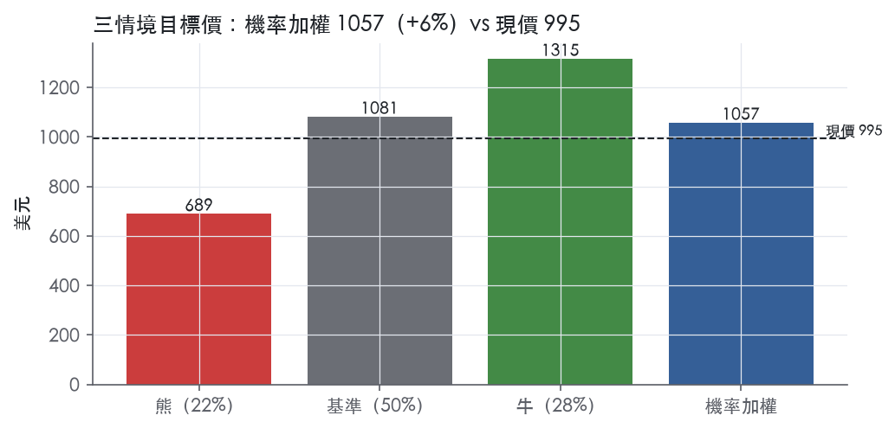
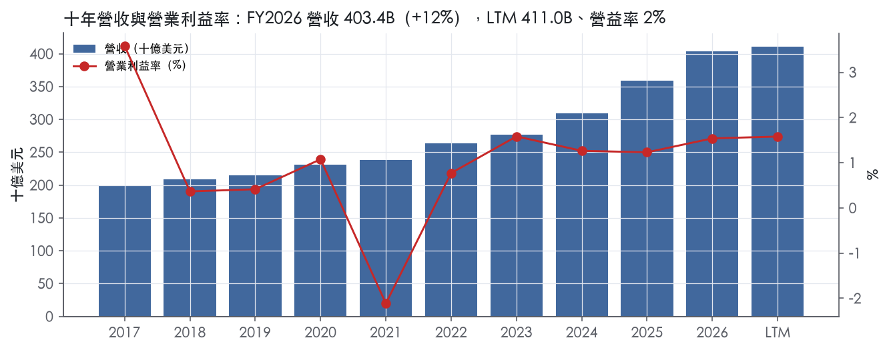
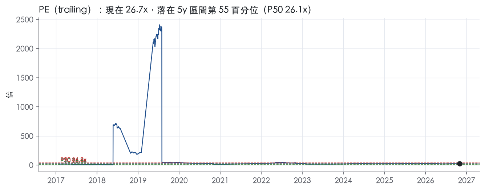
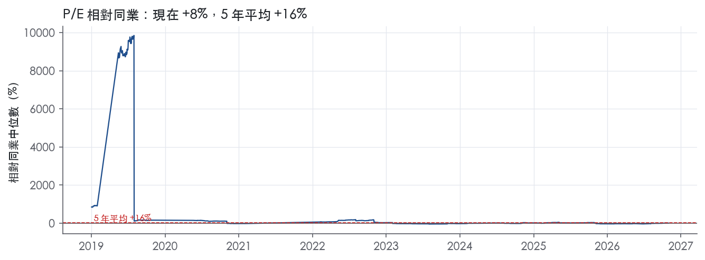
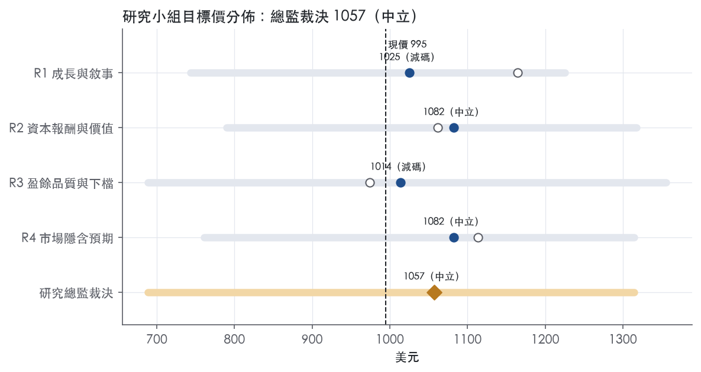
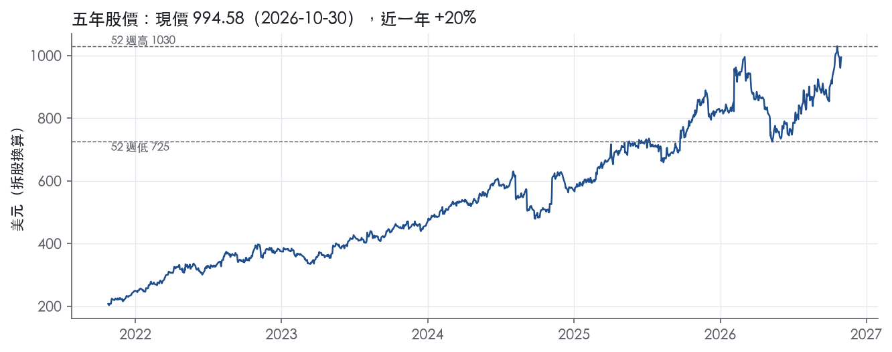

評等總表 › 醫療保健 › MCK
經常性盈餘複利但起點含利得，中性｜評等 中立｜目標價 1057
| 報告日 | 評等 | 目標價 | 當時股價 | 超額報酬 |
|---|---|---|---|---|
| 2026-10-30 | 中立 | 1,057 | 995 | -3.4% |
| 評等 | 中立（邊界，鄰近減碼） |
| 12 個月目標價 | 1057 美元 |
| 現價 | 994.58 美元（2026-10-30） |
| 預期報酬 | 股價 +6.3%＋股息 0.3%＝總報酬 +6.6%；同業籃門檻 10.0%，超額 -3.4% |
| 估值方法 | P/E 21.0x，套在第 5–8 季的EPS（也就是一年後的未來四季） |
| 三情境 | 熊 689／基準 1081／牛 1315 |
| 研究流程 | 四位研究員兩輪辯論＋研究總監裁決 |
| 資料來源 | SEC EDGAR XBRL、Tiingo、FRED（全免費） |
經常性盈餘複利但起點含利得，中性（研究總監裁決，四位研究員兩輪辯論後）
評等 中立（邊界，鄰近減碼）｜12 個月目標價 1057 美元（總監三情境機率加權 1060 與研究員中位數 1053 各半）｜現價 994.58（2026-10-30）
預期報酬：股價 +6.3%＋股息 0.3%＝總報酬 +6.6%。同業籃門檻 10.0%，超額 -3.4%，離減碼的分界不到三個百分點，屬邊界評等（落在其他級距的機率約四成）。
估值方法：P/E 21.0x，套在第 5–8 季的EPS（也就是一年後的未來四季）。三情境：熊 689（22%）／基準 1081（50%）／牛 1315（28%）。
什麼會讓研究總監改變看法：FY2027Q2 揭露 CVS 合約到期落在 12 個月內或大型零售藥局客戶出現信用事件則轉空；O&M 有機成長 ≥15% 且扣分拆費用後 GAAP 營益率站上 1.6% 則轉多。
| 過去四季（實際，FY2027Q1） | 未來四季 | 第 5–8 季 | 第 9–12 季 | |
|---|---|---|---|---|
| 營收（B） | 411.0B | 441.8B | 470.5B | 498.8B |
| 營收成長 | 8.8% | 7.5% | 6.5% | 6.0% |
| 營業利益率 | 1.6% | 1.5% | 1.6% | 1.6% |
| EPS（美元） | 37.21 | 44.72 | 51.47 | 58.86 |
| EPS 成長 | 49.4% | 20.2% | 15.1% | 14.4% |
| 每股股息（美元） | 3.28 | 3.28 | 3.28 | 3.28 |
| P/E（現價） | 26.7x | 22.2x | 19.3x | 16.9x |
| 股息殖利率（現價） | 0.3% | 0.3% | 0.3% | 0.3% |
過去四季為申報數字；預測為研究總監的假設、程式計算。倍數與殖利率都用現價計算，用來看現價對應各期獲利的高低。
| 情境 | 機率（歷史） | 故事 | 未來四季營收成長 | 第 5–8 季營益率 | 倍數 | 目標價 | 股價漲跌 |
|---|---|---|---|---|---|---|---|
| 熊 | 22%（21%） | 風險表第 1 條：CVS 續約壓價並移轉量體，半固定費用去槓桿使營益率回到 FY2024 水準，第 4 條品牌藥通縮同向，回購縮至 FCF 支撐部分，倍數退到前瞻帶 P25–P50 | 4.0% | 1.4% | 17.0x | 689 | -30.8% |
| 基準 | 50%（52%） | 經常性 EPS 走在調整後指引 13–15% 路徑，GAAP 低於調整後，一年後倍數與今天相同 | 7.5% | 1.6% | 21.0x | 1081 | 8.7% |
| 牛 | 28%（27%） | 特殊藥品放量與新藥上市撐住 NAP，O&M 組合擴張，回購由 FCF 全額支應，倍數走向前瞻帶 P90 下方 | 8.5% | 1.7% | 23.0x | 1315 | 32.2% |
目標價由程式依研究總監的驅動與倍數計算；機率由研究總監給定。括號內是歷史頻率：把這檔股票過去十年 12 個月報酬的波動形狀，置中在基準情境，結果落在各情境附近的比例。

四位研究員用不同方法各自估值，回應研究總監的質疑後交出第二輪，最後由總監逐點裁決。各研究員的主張見第七章，裁決理由見第八章，完整論證見《研究底稿》。
| 立場（一輪→二輪） | 加權目標價（一輪→二輪） | 評等（一輪→二輪） | 第二輪倍數 | 熊～牛目標價 | |
|---|---|---|---|---|---|
| R1 成長與敘事 | 看多→中性 | 1165→1025 | 加碼→減碼 | 25.0x | 744～1225 |
| R2 資本報酬與價值 | 中性→中性 | 1062→1082 | 中立→中立 | 24.6x | 789～1317 |
| R3 盈餘品質與下檔 | 中性→看空 | 974→1014 | 減碼→減碼 | 20.0x | 689～1356 |
| R4 市場隱含預期 | 中性→中性 | 1114→1082 | 中立→中立 | 21.0x | 761～1315 |
| 研究總監裁決 | 中性 | 1057 | 中立 | 21.0x | 689～1315 |
目標價由程式依各自的驅動與倍數計算；評等＝機率加權總報酬 − 同業籃門檻。
McKesson 是北美最大的藥品批發與醫療供應鏈公司之一，核心業務是把藥廠的產品配送到藥局、醫院、診所與其他照護端。公司十大客戶（含集團採購組織 GPO）在 FY2026 占總合併營收約 73%，在 2026 年 3 月 31 日占應收帳款約 43%¹。單一最大客戶 CVS Health 占 FY2026 總合併營收約 24%，占應收帳款約 21%；次兩大客戶合計占營收 11% 與 10%¹。這種高度集中的客戶結構意味著任何一家大型連鎖藥局或 GPO 的流失都會對財務狀況造成重大衝擊，10-K 本身也明講這一點¹。FY2026 公司總營收 403.43B 美元，年增 12.4%（dv 成長率），規模遠大於毛利率，顯示這是一個走量、賺價差與服務費的物流型生意，不是高毛利的品牌生意。
公司 FY2026 第四季新聞稿把業務拆成四個分部：North American Pharmaceutical、Oncology & Multispecialty、Prescription Technology Solutions、Medical-Surgical Solutions²。North American Pharmaceutical 是主力，FY2026 全年營收 336.7B 美元，年增 11%，主要靠處方交易量成長，包括零售全國客戶與特殊藥品放量²；調整後分部營業利潤年增 10%，公司長期目標是該分部調整後營業利潤成長 5%–8%²。Oncology & Multispecialty 是成長最快的分部，FY2026 全年營收 48.4B 美元，年增 31%，調整後營業利潤年增 53%，動能來自 provider solutions、特殊藥品配送與併購貢獻²；長期目標是該分部調整後營業利潤成長 13%–16%²。Prescription Technology Solutions 規模較小，FY2026 全年營收 5.8B 美元，年增 11%，調整後營業利潤年增 17%，主要吃第三方物流與存取解決方案需求²，長期目標是調整後營業利潤成長 10%–13%²。Medical-Surgical Solutions 全年營收 11.5B 美元，僅年增 1%，調整後營業利潤年增 1%，受門診照護通路拖累²；這個分部正在被分拆，新品牌名稱為 Wellverse，Apollo Funds 已於 2026 年 6 月 1 日取得約 13% 少數股權，代價 1.25B 美元³。各分部佔合併營收比重，10-K 的細項揭露要查 Financial Note 20「Segments of Business」，本報告未取得逐項數字，10-K 未揭露於正文中。
客戶集中度是這個生意模式的結構性特徵，不是風險附註而已。公司在 FY2026 持續把歐洲業務出清，2026 年 1 月 30 日完成出售挪威零售與配送業務，代表「完全退出歐洲業務的最後階段」²。加拿大零售業務也已在 2024 年 12 月 30 日出售完成¹。地理重心因此進一步收斂到北美市場。通路上，公司服務對象橫跨零售藥局、醫院健康系統、特殊藥品診所（腫瘤科為主）、以及透過 GPO 代理的會員機構，GPO 本身不構成信用集中風險，因為應收帳款是對個別會員認列¹。存貨管理上，國內存貨多數採用 LIFO 法，2026 年 3 月 31 日存貨淨額 24.2B 美元，其中約 59% 採 LIFO 計價¹。
FY2026Q2（截至 2025-09-30）營收 103.15B 美元，年增 10.1%，EBITDA 1.59B 美元。FY2026Q3（截至 2025-12-31）營收 106.16B 美元，年增 11.4%，EBITDA 升至 1.81B 美元，毛利率回升至 3.5%。FY2026Q4（截至 2026-03-31）營收 96.3B 美元，年增 6%²，稀釋 EPS 13.71 美元，較去年同期增加 3.70 美元，調整後稀釋 EPS 11.69 美元，年增 16%，驅動力是強勁的營運成長、Oncology & Multispecialty 分部的併購貢獻、較低股數與較低稅率²。全年（FY2026）營收 403.4B 美元，年增 12%，稀釋 EPS 38.38 美元，年增 12.66 美元，調整後稀釋 EPS 39.11 美元，年增 18%，超越公司先前溝通的長期成長目標²；全年營運現金流 6.2B 美元，自由現金流 5.4B 美元²。FY2027Q1（截至 2026-06-30）營收 105.4B 美元，年增 8%，成長動能來自 North American Pharmaceutical 與 Oncology & Multispecialty 分部處方量與特殊藥品配送增加，部分被品牌藥貢獻下滑抵銷³；GAAP 稀釋 EPS 5.15 美元，較去年同期的 6.25 美元下滑 1.10 美元，主因是 Medical-Surgical Solutions 分部可贖回少數股權的重估值調整 293M 美元，部分被企業整體的內生成長抵銷³；調整後稀釋 EPS 9.93 美元，年增 20%³。本季營運現金流為負 220M 美元，資本支出 152M 美元，自由現金流為負 372M 美元³。公司同時把 FY2027 調整後稀釋 EPS 指引上修至 44.20–45.00 美元，原區間為 43.80–44.60 美元，隱含年增 13%–15%³。
公司在 FY2026 Q4 法說稿中把策略定調為「more focused and optimized portfolio」，具體動作是出清歐洲業務與推動 Medical-Surgical Solutions 分拆，同時加碼投資 Oncology 與 Biopharma Services 這兩個「high-growth and high-margin areas」²。CEO Brian Tyler 在 FY2027Q1 法說稿中把成長動能歸因於「核心配送業務的實力、腫瘤與多專科業務的持續成長，以及生物製藥服務平台的扎實執行」³。公司重申長期調整後稀釋 EPS 成長目標為 13%–16%，並分別給出三個分部的長期調整後營業利潤成長目標：North American Pharmaceutical 5%–8%、Oncology & Multispecialty 13%–16%、Prescription Technology Solutions 10%–13%²。資本配置上，公司明講「disciplined capital allocation framework」，優先投資高毛利成長領域，同時透過股票回購與股息把多餘資本還給股東，FY2026 全年回購 4.8B 美元、配息 381M 美元²。從結構看，McKesson 正在把自己從「低毛利批發商」往「腫瘤與生物製藥服務」這種高毛利、高成長的利基市場遷移，Medical-Surgical 分拆則是把拖累整體成長率的慢速資產切割出去，讓母公司財報的成長輪廓更乾淨。風險在於核心配送業務仍占營收絕大部分且客戶集中度極高，CVS 一家就占營收近四分之一，任何合約條件惡化都會直接打擊獲利能見度。長期 EPS 目標 13%–16% 相對於 FY2026 已實現的 18% 調整後 EPS 成長率是保守的，顯示公司自己也認知到基期墊高後成長率會自然收斂。

McKesson 的護城河評級為窄，趨勢穩定。優勢來自全國配送網路帶來的成本優勢與效率規模，我們有把握這兩項優勢在未來 5 年以上維持超額報酬。要評為寬，必須有把握撐過 10 年，但客戶議價力過強、單一客戶比重過高，加上鴉片類藥物負債要付到 2038 年，我們給不出這個把握。
優勢來源有兩類：成本優勢與效率規模。轉換成本、網路效應、無形資產三類沒有證據支持，不列入。
成本優勢。 公司的採購規模大到能從藥廠拿到返利與折扣，並由供應商資金支應營運。10-K 寫明，自供應商取得的返利、現金折扣與其他誘因，視為產品折扣並沖減存貨成本。¹FY2026 營收 403.43B 美元，資本支出占營收僅 0.1%，代表這套規模不需要大量再投資來維持。營運資本上，應付帳款天數 59 天，高於應收帳款天數 22 天與存貨天數 24 天。¹2026 年 3 月 31 日營運資本為 -9,807M 美元。¹藥廠實質上在替 McKesson 融資存貨，這是規模較小的對手複製不了的成本結構。
效率規模。 能承接全國性大客戶的配送商只有少數幾家，新進者沒有誘因重建一套全國網路。十大客戶（含 GPO）占 FY2026 總合併營收約 73%。¹最大客戶 CVS 占約 24%，次兩大客戶分別占 11% 與 10%。¹這樣的買方結構只容得下少數具全國覆蓋能力的供應商。但我們拿到的 10-K 段落屬於 MD&A 的關鍵會計估計與流動性章節，不含競爭段落，市占率與對手家數無法用原文佐證，這是本節證據上的缺口。
ROIC 底稿無法驗證護城河，利潤率與現金流的穩定度則支持窄護城河的判斷。
量化底稿顯示，ROIC 十年平均為 -194.6%，標準差 323.6%，有資料的 9 年中只有 2 年高於 10.0% 的資本成本。單看這組數字，會得出「無護城河」。我們不採用這組數字，原因是公司處於股東權益虧絀狀態，投入資本接近零或為負，比率的正負號會隨分母翻轉，讀數失去經濟意義。10-K 揭露的負債對資本比為 128.0%，報表本身就叫做 Stockholders' Deficit。¹ROE 最新為 -224.3%，問題相同。FY2021 的真實虧損則來自一次性的鴉片類藥物訴訟提列，當年營益率 -2.1%，屬事件衝擊，不是競爭力流失。
可用的替代證據是現金流與利潤率。FCF 利潤率十年平均 1.7%，標準差僅 0.2%，區間 1.3% 到 2.2%。即使在 FY2021 淨虧損 4.54B 美元那一年，FCF 仍有 4.09B 美元；十年間 FCF 最低是 3.61B 美元。毛利率標準差 0.7%，波動同樣很小。
衝突點在於毛利率本身：最新值 3.6% 正是十年最低，十年最高是 5.7%。同期營業利益率最新為 1.5%，高於十年平均 1.0%，顯示毛利率下滑主要來自特殊藥品這類高單價、低毛利率營收的組合變化，費用槓桿已經抵銷。因此趨勢判為穩定，不判為變窄。
最大的侵蝕來源是客戶議價力。10-K 明講，失去大客戶或 GPO、或其採購大幅減少，可能對財務狀況與經營成果造成重大不利影響。¹CVS 換約條件一旦惡化，會直接吃掉價差，而公司手上沒有足以反制的轉換成本。
第二是客戶信用風險。FY2024 公司因客戶 Rite Aid 破產，在 North American Pharmaceutical 分部提列 725M 美元壞帳。¹零售藥局端的財務體質惡化，會讓這門薄利生意的損失放大。
第三是訴訟負債。截至 2026 年 3 月 31 日，鴉片類藥物相關應計負債為 5.7B 美元，主要款項按年分期支付至 2038 年。¹公司也表示無法合理估計最終損失區間的上下限。¹
第四是藥價變動。FY2026 出現 210M 美元的 LIFO 回沖，主因是品牌藥大幅通縮。¹政府報銷率下修也被公司列為可能壓低預估現金流的因素。¹
目標倍數相對同業應持平，不給溢價。護城河屬於藥品配送寡占結構的共同特徵，McKesson 沒有同業缺乏的獨特來源；FCF 的穩定度足以支撐倍數不打折，但客戶集中與鴉片類藥物負債封住了溢價空間。目前 P/E 26.7x 接近 5 年中位數 26.1x，P/FCF 18.5x 則已位於 5 年 79.8% 分位，我們建議以歷史中位數為錨，不追高。
| 指標 | 最新 | 十年平均 | 標準差 | 最低 | 最高 |
|---|---|---|---|---|---|
| ROIC | -589.8% | -194.6% | 323.6% | -814.0% | 295.6% |
| 毛利率 | 3.6% | 4.8% | 0.7% | 3.6% | 5.7% |
| 營業利益率 | 1.5% | 1.0% | 1.3% | -2.1% | 3.6% |
| FCF 利潤率 | 1.4% | 1.7% | 0.2% | 1.3% | 2.2% |
| ROE | -224.3% | -108.7% | 86.0% | -224.3% | 13.7% |
程式計算。資本成本代理值（10 年債＋5%）：10.0%；ROIC 平均減資本成本：-204.6%；ROIC 有資料的 9 年中，高於資本成本 2 年。
McKesson 的盈餘品質計分表全線綠燈：CFO／淨利 LTM 1.49x、近三年 1.53x，FCF／淨利 LTM 1.40x，應計比率 -2.6%，槓桿 0.67x，利息保障 23.6x，股數年變動 -3.9%。真正的複雜點不在現金有沒有跟上，而在 GAAP 淨利裡塞了大量處分收益、重組費用、重估調整這些非經常性項目，使 EPS 年度間波動很大，需要拆解才能用。
LTM 現金轉換完全健康，CFO／淨利 1.49x、FCF／淨利 1.40x，均高於綠燈門檻 1.00x／0.90x。應計比率 LTM -2.6%、十年平均 -5.5%，長期為負值代表盈餘認列落後於現金收取，不是靠應計堆出來的。FY2026 存貨成長減營收成長為 -7.1pp，顯示營運資金沒有在吃盈餘，這與公司提到的 LIFO 信用 210M（因品牌藥價格下滑）一致⁴。
但要注意季度波動很大：FY2027Q1 單季 CFO 為 -220M、FCF 為 -372M³，FY2026Q1 與 FY2026Q3 也都出現 CFO 轉負或大幅下滑的狀況（資料包季表）。這是藥品分銷業典型的應付／應收帳款時點效應，不是結構性惡化，LTM 與十年平均都還是正值且遠高於門檻。
FY2027Q1：GAAP 稀釋 EPS 5.15 美元，Adjusted EPS 9.93 美元，差距近一倍³。差距主要來自：(1) 與 Medical-Surgical Solutions 分拆相關、對 Apollo 可贖回非控制權益的重估調整 293M³；(2) 上年同期 Rite Aid 破產壞帳準備增提 189M 的高基數效應³。
FY2026 全年層級，非 GAAP／GAAP 落差來自：挪威業務處分淨利得 480M（計入營業費用，其中含 164M 累積其他綜合損失轉出）⁴；重組、減損及相關費用 245M（FY2025 為 286M）⁴；Medical-Surgical 分割相關費用淨額 77M（SDG&A 內）⁴；LIFO 信用 210M（FY2025 為 LIFO 費用 82M）⁴；反訴訟和解現金收入 23M（FY2025 為 444M，基數大幅下滑）⁴。
我的判斷：重組費用、分割相關費用、LIFO 波動都是真實的現金或會計影響，但屬性是一次性或與分拆時程綁定，應該從「經常性盈餘能力」中剔除；反訴訟和解收入連續兩年入帳且金額波動劇大（444M→23M），分析時應視為不可持續的營業外收益，不能當作核心獲利成長。挪威處分利得是資產處置一次性損益，應全額剔除。公司未對 SBC 做加回調整（SBC／營收僅 0.1%），顯示 SBC 本身不是估值爭議點。
槓桿極低、資本配置激進偏股東回饋。淨負債／EBITDA LTM 0.67x、十年平均 1.04x，利息保障倍數 23.6x，遠高於紅燈門檻。但 FY2026 期間公司舉債 2.0B 淨收益（4.65%／4.95%／5.25% 三檔債券）去支應 Core Ventures 收購現金對價 2.5B⁴，屬於用增量負債去做併購與股東回饋的組合，資產負債表仍有餘裕吸收。
股東回饋力度很大：FY2026 以 4.8B 回購、381M 股利共返還 5.1B 現金給股東⁴；FY2027Q1 單季再以 2.5B 回購（含 2.25B 加速回購）加 102M 股利返還 2.6B³；董事會並在 FY2027Q1 將季度股息從 0.82 美元上調 15% 至 0.94 美元，連續第十年增加³。（股利＋回購）／淨利 LTM 154.4%、十年平均 967.3%，顯示回饋股東金額經常性地超過當期淨利，但這是靠低槓桿與穩定現金流支撐，不是舉債透支。另需留意的是，FY2026 發生兩筆重大併購現金支出（PRISM Vision 875M、Core Ventures 2.5B）⁴，以及 Medical-Surgical Solutions 分拆相關的新增融資（Apollo 1.25B 可轉換優先股投資、2.25B Term Loan B）³，資本結構正在為分拆重整，未來並表範圍會縮小，需留意分拆後 EBITDA 基礎會跟著下修。
計分表本身沒有任何紅燈或程式標出的紅旗，九項指標全部綠燈。因此這裡要回應的不是計分表紅旗，而是文字敘述裡隱含的品質風險點：
估值應以 Adjusted EPS／Adjusted Operating Profit 為核心輸入，GAAP EPS 因挪威處分、重估調整、訴訟和解等一次性項目噪音過大不適合直接外推成長率。現金轉換與應計指標乾淨、槓桿極低（淨負債／EBITDA 0.67x），不構成對估值倍數的限制，EV/EBITDA 18.1x 與 P/E 26.7x 可以維持而不需額外折價。唯一需要留意的是 Medical-Surgical Solutions 分拆進度與 Apollo 少數股權交易，一旦完成會改變合併報表範圍與槓桿結構，屆時 EBITDA 基礎需重新校準，但現階段不必對現有盈餘打質量折扣。
| 項目 | LTM | 近三年 | 十年 | 燈號 | 規則 |
|---|---|---|---|---|---|
| 營業現金流／淨利 | 1.49x | 1.53x | 19.8x | 綠 | ≥1.00x 綠、<0.80x 紅 |
| 自由現金流／淨利 | 1.40x | 1.39x | 17.9x | 綠 | ≥0.90x 綠、<0.60x 紅 |
| 應計比率（(淨利−CFO)／平均總資產） | -2.6% | -2.6% | -5.5% | 綠 | ≤0.0% 綠、>5.0% 紅 |
| SBC／營收 | — | 0.1% | 0.1% | 綠 | ≤3.0% 綠、>8.0% 紅 |
| 淨負債／EBITDA | 0.67x | 0.21x | 1.04x | 綠 | ≤1.50x 綠、>3.00x 紅 |
| 利息保障倍數（營業利益／利息） | 23.6x | 19.1x | 10.2x | 綠 | ≥8.00x 綠、<3.00x 紅 |
| 稀釋股數年變動 | -3.9% | -4.4% | -6.3% | 綠 | ≤0.0% 綠、>3.0% 紅 |
| （股利＋回購）／淨利 | 154.4% | 108.3% | 967.3% | 綠 | ≥50.0% 綠、<0.0% 紅 |
| 存貨成長 − 營收成長（FY2026） | -7.1pp | — | — | 綠 | ≤5pp 綠、>15pp 紅 |
程式計算；燈號以 LTM（無則近三年平均）判定。
| 風險 | 觸發指標（看什麼數字、在哪裡看） | 對 EPS 的影響方向與粗略幅度 | 未來 12 個月發生機率（高／中／低） | 出處 |
|---|---|---|---|---|
| 客戶集中度：CVS 及前三大客戶流失或合約重訂 | 每季 10-Q／10-K 揭露的前十大客戶營收占比（現為 73%）、CVS 單一占比（現為 24%）；應收帳款集中度（CVS 21%） | 方向：負向，幅度：大（單一客戶即占營收近四分之一）¹ | 中 | 10-K 年報 FY2025 Item 1（業務） |
| 鴉片類訴訟與其他法律負債的現金流出壓力 | 資產負債表「opioid-related claims」應計負債餘額（現為 5.7B 美元）；未來 12 個月預計支付金額（601M 美元） | 方向：負向，幅度：中（已提列但未來可能需追加） | 中 | ⁵¹ |
| Medical-Surgical Solutions 分拆執行風險（含 Apollo 少數股權重估值） | 分拆時程公告、Apollo Funds 可贖回少數股權的「redemption value adjustment」金額（本季已造成 293M 美元 GAAP EPS 衝擊）、Term Loan B 2.25B 美元的槓桿與利率 | 方向：負向，幅度：中（FY2027Q1 GAAP EPS 已年減 1.10 美元） | 高 | 8-K 財報新聞稿（2026-08-05） |
| 品牌藥轉學名藥與藥價下跌壓縮核心配送毛利 | North American Pharmaceutical 分部毛利率、LIFO 信用／charge 金額（FY2026 為 210M 美元信用，顯示藥價通縮） | 方向：負向，幅度：中（已是連年毛利率下滑的結構性趨勢：FY2017 5.7%→FY2026 3.6%） | 中 | ¹量化底稿 |
| 商譽與無形資產減損風險（併購驅動） | 商譽餘額（11.3B 美元，較前一年 10.0B 美元增加）、無形資產淨額（4.1B 美元）；每年第一財季減損測試結果公告 | 方向：負向，幅度：中（目前未減損，但假設失效可能衝擊） | 低 | 10-K 年報 FY2025 Item 1（業務） |
客戶集中度是這份報告排名最高的風險，因為它同時滿足「機率不低、衝擊極大」兩個條件。公司自己在關鍵會計估計一節寫明：十大客戶（含 GPO）在 FY2026 占總合併營收約 73%，占應收帳款約 43%；CVS 單一一家占營收約 24%、占應收帳款約 21%；次兩大客戶合計再占 11% 與 10%¹。公司原文直接講「A material default in payment, a material reduction in purchases from GPOs or any other large customers, or the loss of a large customer or GPO could have a material adverse impact on our financial position, results of operations, and liquidity」¹。這不是法律免責條款式的風險揭露，而是真實存在的結構——Rite Aid 破產案已經示範過一次：FY2024 計提 725M 美元壞帳準備，之後才分年沖回¹。監測方法是每季看 10-Q 裡客戶集中度揭露有無變化，以及應收帳款壞帳準備的異常波動。
鴉片類訴訟負債排名第二，因為金額巨大且時間跨度長至 2038 年¹。公司在 10-K 中明言「We are not able to reasonably estimate the upper or lower ends of the range of ultimate possible losses for all opioid-related litigation matters」「an adverse judgment or negotiated resolution... could have a material adverse effect on our results of operations, financial position, and cash flows or liquidity」⁵。目前帳上已提列 5.7B 美元，未來 12 個月預計支付 601M 美元，這部分已是現金流確定支出，但若新增訴訟或既有估計不足導致追加計提，會直接衝擊 SDG&A 與淨利¹。監測指標是每季財報附註中「opioid-related claims」應計負債餘額是否上調，以及是否出現新的政府訴訟公告。
Medical-Surgical Solutions 分拆執行風險是目前機率最高的一條，因為分拆正在進行中、且已實際衝擊過一次 GAAP EPS。FY2027Q1 的 GAAP EPS 從 6.25 美元降到 5.15 美元，公司明講主因是「a redemption value adjustment of $293 million related to redeemable non-controlling interests for the Medical-Surgical Solutions segment」³。這種重估值調整會隨著 Apollo Funds 持股的公允價值變動而反覆出現在未來幾季，直到分拆完成，而分拆本身還需監管核准與交割條件達成¹。此外公司已為分拆建立 2.25B 美元 Term Loan B 與獨立的信用額度，分拆後的獨立體（已命名 Wellverse）要自行承擔槓桿成本³。監測指標是每季財報的「redemption value adjustment」金額、分拆交割時程公告、以及 Wellverse 獨立後的資本結構揭露。
品牌藥轉學名藥與藥價下跌是壓縮核心配送業務毛利率的結構性力量，不是單一事件。10-K 財務回顧章節多次提到「branded to generic drug conversion and branded pharmaceutical price decreases」拖累營收與毛利成長¹，FY2027Q1 新聞稿也重複這個措辭：「partially offset by lower contributions from branded pharmaceuticals」³。量化底稿顯示公司整體毛利率從 FY2017 的 5.7% 一路降到 FY2026 的 3.6%，是近十年持續的趨勢，LIFO 信用／charge 的方向變化（FY2026 是 210M 美元信用，代表品牌藥通縮）也反映這個力道仍在作用。監測指標是每季 North American Pharmaceutical 分部毛利率與 LIFO 調整金額的方向。
商譽與無形資產減損排在最後，因為公司連續三年測試都沒有減損，機率偏低，但近兩年併購（Core Ventures 2.5B 美元、PRISM Vision 875M 美元）讓商譽從 10.0B 美元跳升到 11.3B 美元，無形資產從 1.5B 美元跳升到 4.1B 美元，基數變大之後，一旦整合不如預期或折現率假設上修，潛在減損金額也會變大¹。公司自己列出的觸發條件包括「failure to meet business plans, negative changes in government reimbursement rates, deterioration in the U.S. and global financial markets, an increase in interest rates」¹，目前十年期美債利率已在 4.98%，屬於偏高環境，值得留意折現率假設的敏感度。
Medical-Surgical Solutions 分拆完成後，母公司（McKesson 母體）將永久失去這部分相對穩定但低成長的營收與現金流貢獻，剩餘業務的成長率與波動性會同時上升，這會直接影響市場給予的目標倍數假設，但 10-K 與新聞稿都只強調分拆帶來的「更聚焦組合」敘事，沒有量化分拆後母公司現金流的集中度與波動性變化。
公司過去兩年密集動用 ASR（加速股票回購）與一次性處置利得（挪威出售淨利得 480M 美元、加拿大零售重估值等）美化 GAAP EPS 成長率，FY2026 全年 GAAP EPS 年增 49%，但調整後 EPS 僅年增 18%，兩者差距顯示近兩年的 GAAP EPS 高成長有相當比例來自非經常性項目與股數縮減，而非營運本身的加速，這個落差若在熊市情境下被市場重新定價，倍數壓縮的風險會高於單純看 GAAP EPS 趨勢所顯示的。
現價 994.58 對應 trailing（過去四季）P/E 26.7x、EV/EBITDA 18.1x、EV/EBITA 18.1x、EV/Sales 0.3x、FCF 殖利率 5.4%。主要估值倍數 P/E 現在 26.7x，落在5 年區間第 55 百分位（P10／P50／P90 = 16.6x／26.1x／36.8x）。

把程式的機械基準預測放到現價下，市場付的前瞻倍數是：P/E（未來四季） 20.9x、P/E（第 5–8 季） 18.5x。反推 DCF 顯示市價隱含未來五年營收年成長 8.6%（WACC 9.0%、終值成長 3.0%、FCF 利潤率 1.3%，SBC 不加回）。
| 倍數 | 現在 | 5 年 P10 | 5 年 P50 | 5 年 P90 | 現在分位 | 全期 P50 |
|---|---|---|---|---|---|---|
| P/E | 26.7x | 16.6x | 26.1x | 36.8x | 54.6% | 25.8x |
| EV/EBITDA | 18.1x | 12.3x | 17.5x | 20.1x | 58.5% | 18.3x |
| EV/EBITA | 18.1x | 13.0x | 18.6x | 21.7x | 45.5% | 18.9x |
| EV/EBIT | 19.0x | 13.7x | 19.9x | 23.4x | 42.4% | 20.6x |
| EV/Sales | 0.3x | 0.2x | 0.2x | 0.3x | 97.5% | 0.2x |
| P/S | 0.3x | 0.2x | 0.2x | 0.3x | 97.3% | 0.2x |
| P/FCF | 18.5x | 10.4x | 14.3x | 21.4x | 79.8% | 11.6x |
trailing 倍數（股價 ÷ 過去四季）；分位以每個交易日計算。
同業籃：COR, CAH, HSIC, CVS（手動名單（playbooks/peers.yaml））。評等門檻 10.0%：同業「倍數不變下持有一年」的隱含報酬中位數（＝ FCF 殖利率 ×(1＋g)＋g，g 為 5 年營收年複合成長並夾在 −2%～8%），每家夾在 0～15%、P/E 低於 5 倍視為資料可疑而排除，中位數再限制在 10 年債到 10 年債＋5% 之間（同業原始中位數 15.0%）。
| 代號 | 市值 | 5 年營收 CAGR | 營益率 | ROIC | P/E | 5 年 P/E 中位數 | EV/EBITDA | P/FCF | 隱含報酬 |
|---|---|---|---|---|---|---|---|---|---|
| MCK | 118.6B | 11.1% | 1.6% | -589.8% | 26.7x | 26.1x | 18.1x | 18.5x | 13.8% |
| COR | 63.1B | 11.1% | 0.9% | 54.4% | 24.6x | 24.1x | 17.7x | 15.5x | 14.9% |
| CAH | 59.4B | 9.4% | 1.0% | 135.8% | 36.1x | — | 19.2x | 10.8x | 18.0% |
| HSIC | 9.5B | 5.4% | 5.0% | 8.3% | 24.9x | 22.2x | 12.7x | 16.7x | 11.7% |
| CVS | 115.3B | 8.4% | 2.0% | 2.9% | 23.8x | 17.9x | 12.7x | 9.8x | 19.0% |
| 同業中位數 | 8.9% | 1.5% | 31.3% | 24.7x | 22.2x | 15.2x | 13.2x | 10.0% |
全部 trailing，程式以各公司 SEC XBRL 與 Tiingo 行情計算；第一列為本檔。
P/E 相對同業中位數：現在 8.1%，過去 1 年平均 -20.5%、3 年 -1.4%、5 年 16.3%；EV/EBITDA 相對同業中位數：現在 17.1%，過去 1 年平均 9.1%、3 年 26.7%、5 年 27.6%。

事後實現前瞻倍數帶（P/E，2018-08-17..2025-08-15）：P10／P50／P90 = 11.7x／18.1x／24.0x。它是每個交易日的股價除以之後四季實際實現的指標；一年後，今天的第 5–8 季正是那時的未來四季，所以這條帶是 12 個月目標價的同口徑倍數。因為用的是事後實際而非當時預期，過去成長超乎預期的公司這條帶會偏低。
程式的機械基準（成長率從過去四季年增率三年收斂到 6%、利潤率持平）用 事後實現前瞻 P/E P50 估值得到 974（-2.1%），市場現行前瞻倍數（現價 ÷ 基準 未來四季指標）一年後持平，套在基準 第 5–8 季指標得到 1123。這兩個數字只是參考點，不是本報告的目標價；研究員對這個定價的回應在第七章。
下表是每位研究員第一輪（各自獨立）與第二輪（回應研究總監的質疑後）的結果。目標價全由程式依各自的假設計算。
| 立場（一輪→二輪） | 加權目標價（一輪→二輪） | 評等（一輪→二輪） | 第二輪倍數 | 熊～牛目標價 | |
|---|---|---|---|---|---|
| R1 成長與敘事 | 看多→中性 | 1165→1025 | 加碼→減碼 | 25.0x | 744～1225 |
| R2 資本報酬與價值 | 中性→中性 | 1062→1082 | 中立→中立 | 24.6x | 789～1317 |
| R3 盈餘品質與下檔 | 中性→看空 | 974→1014 | 減碼→減碼 | 20.0x | 689～1356 |
| R4 市場隱含預期 | 中性→中性 | 1114→1082 | 中立→中立 | 21.0x | 761～1315 |
| 研究總監裁決 | 中性 | 1057 | 中立 | 21.0x | 689～1315 |
目標價由程式依各自的驅動與倍數計算；評等＝機率加權總報酬 − 同業籃門檻。
分歧度：第一輪 加權目標價 974～1165（區間＝現價的 19%）· 倍數 20～26x · 立場 看多×1、中性×3；第二輪 加權目標價 1014～1082（區間＝現價的 7%）· 倍數 20～25x · 立場 中性×3、看空×1。

| 研究員 | 第二輪主張 | 堅持的理由 |
|---|---|---|
| R1 成長與敘事 | 中立；25 倍 P/E 套未來一年 EPS，經常性營益率起點壓到 1.40%。 | 堅持用自家五年 P/E 中位數 26.1 倍當錨，前瞻倍數只作交叉檢查。 |
| R2 資本報酬與價值 | 中立；24.6 倍 P/E，錨定唯一的純藥品批發同業 COR。 | 第一季回購 2.5B 靠舉債，股數每年只減 4.0%，不取 5.0%。 |
| R3 盈餘品質與下檔 | 看空；20 倍 P/E 套第二年 EPS，現價已付足基準情境。 | 不給更高倍數：分拆失去 Med-Surg 現金流，成長分部有少數股東。 |
| R4 市場隱含預期 | 中立；21 倍 P/E 套第二年 EPS，約等於市場持平點 20.9 倍。 | 市場隱含營收成長 8.6% 太高，他只給 7.0%、6.5%、6.0%。 |
每位研究員的逐條回應與完整論證見《研究底稿》（MCK_研究底稿_2026-11-01.docx）。
| 分歧點 | R1 | R2 | R3 | R4 | 什麼資料會分出勝負 |
|---|---|---|---|---|---|
| NTM 營益率起點（op_margin_y1） | 1.40%：對照 FY2024 1.3%、FY2025 1.2%、FY2027Q1 1.3%，Q1 為季節低點 | 1.50%：LTM 1.6% 含挪威 480M、LIFO 信用 210M | 1.50%：同 R2，加 Q1 分部 GAAP 仍低於調整後 | 1.50%：取 FY2026 全年 1.5%（GAAP 38.38≈調整後 39.11 那年） | FY2027Q2 GAAP 營益率對去年 1.4%；分部 GAAP／調整後利潤差 |
| 利潤率擴張 y2／y3 | 1.45／1.50（O&M 的 GAAP 落差大） | 1.55／1.60 | 1.55／1.65（O&M 調整後 +41%） | 1.55／1.60 | O&M 分部 GAAP 營業利潤成長是否跟上調整後；Med-Surg 交割日 |
| 倍數與口徑 | 25x eps@ntm，錨 5y P50 26.1x 下方 | 24.6x eps@ntm，錨純同業 COR | 20x eps@q5_q8，前瞻帶 P50–P75 偏下 | 21x eps@q5_q8，前瞻帶 P50–P75 偏上≈市場持平 20.9x | 一年後 trailing P/E 是否 ≤ 26.1x；分拆形式（spin 或售出） |
| 股數變動（share_change_pct） | -4% | -4%：Q1 回購靠舉債，總債務 6.53B→9.73B | -4% | -5%（沿用基準） | FY2027 年底總債務是否 > 6.53B；全年回購對 FCF |
| NTM 營收成長（rev_growth_y1） | 7.0% | 7.5%：Q4 6.0%、Q1 7.7% | 7.0% | 7.0%：市場隱含 8.6% 太高 | FY2027Q2 營收年增；O&M 併購週年化後有機成長 |
分歧一：營益率起點 → 選 R2／R3／R4 的 1.50%。 四位都同意基準 1.6%（照 LTM 持平）被營業線以上的一次性利得墊高：挪威處分淨利得 480M（計入營業費用，2026-01-30 交割，落在 FY2026Q4，當季營益率 2.2%）、LIFO 信用 210M、Rite Aid 備抵回沖 483M，對面只有重組 245M 與分拆費用 77M（10-K Item 7，財務體質章）。分歧只在 R1 要壓到 1.40%。他的對照點 FY2024 1.3%含 Rite Aid 725M 壞帳提列、FY2025 1.2%含重組 286M 與 LIFO 費用 82M（10-K Item 7），都是被一次性費用壓低的年份，拿它們當經常性水準只是把偏誤換了方向。更關鍵的是 1.40% 等於假設 NTM 沒有任何經常性擴張，但 FY2027Q1 三個成長分部的調整後營業利潤成長都快過營收（NAP +19% 對營收 +5%、O&M +41% 對 +33%、PTS +13% 對 +9%，8-K 2026-08-05），GAAP 營益率 1.3% 也高於去年同期 1.1%。R4 取 FY2026 全年 1.5%當起點最乾淨：那一年 GAAP 38.38 對調整後 39.11（8-K 2026-05-07），一次性項目大致相抵。本部紀錄裡研究總監的營業利益誤差中位數 +0.9%（偏高），1.50% 已比基準低 10bp，修正方向正確。
分歧二：擴張幅度 → 選 R2／R4 的 1.55%／1.60%。 三方接受組合往 O&M 移動帶來每年約 5bp。R3 的 y3 1.65% 多出的 5bp 依據是 O&M 調整後 +41%，但 R1 的橋（8-K 2026-05-07 全年：O&M 調整後 1.4B 對 GAAP 1.1B；FY2027Q1 405M 對 325M）顯示 GAAP 與調整後的落差正集中在這個靠併購成長的分部，調整後的擴張不能全額換成 GAAP 營益率。R3 看到卻沒用的另一筆材料：Med-Surg 分部 FY2027Q1 調整後營業利潤 195M 對營收 2.8B（8-K 2026-08-05），單位營收利潤遠高於合併 1.3%，分拆交割後合併營益率會被稀釋，而交割日不明。R1 的 1.45／1.50 是把 y1 的超調帶到後兩年，缺口同分歧一。
分歧三：倍數與口徑 → 選 R4 的 21x eps@q5_q8。 這是真正決定目標價的分歧。口徑先定：劇本主尺是 eps@q5_q8，同口徑的錨是事後實現前瞻帶（P50 18.1x／P75 21.9x／P90 24.0x）。R1 用的 5 年 trailing P50 26.1x，分母含 FY2021 EPS -28.26、FY2022 7.23這類被鴉片提列壓低的 GAAP EPS，P/E 被推高，套在已扣一次性利得的經常性 EPS 上會高估——R1 自己承認，所以他的 1035 其實是靠壓營益率而非倍數得出。四位都指出前瞻帶因樣本期 EPS 從 7.23 暴增到 38.38、實現值遠高於當時預期而系統性偏低，站在 P50 之上是共識；分歧只在 R3 停 20x、R4 到 21x。R3 不到 P75 的兩條理由不成立：(a)「分拆後母體失去 Med-Surg 現金流」——Apollo 以 1.25B 取得約 13%（8-K 2026-08-05），無論 spin 或售出，股東以 Wellverse 股權或現金收回對價，是口徑調整不是價值流失，「more focused portfolio」反而是倍數不收縮的理由；(b)「成長引擎 30%／20% 屬少數股東」——R3 在 Q3 已承認 NCI 在程式 EPS 歸屬比例內，再拿它壓倍數是重複計算。R4 的 21x 約等於市場持平點 20.9x，意思是一年後市場付的倍數與今天相同：不多，因為客戶集中（CVS 24%）、備抵占應收 2.1%→0.8%、鴉片支付 601M 三條個股理由封住 P75；不少，因為股息連續十年上調、調整後指引 Q1 即上修（8-K 2026-08-05）、CFO／淨利 1.49x（財務體質章），市場沒有降評的理由。交叉驗證：R2 以純同業 COR 24.6x 套 ntm 得 1100，R4 的 21x@q5_q8 得 1093（程式結果表），兩個獨立口徑的錨收斂在同一帶。相對同業：MCK trailing P/E 對同業中位數現在溢價 8.1%、3 年平均 -1.4%（同業比較表），護城河章給「持平、不給溢價」，21x 與之一致。第二輪四位已全部刪除利率理由，無需再點。
分歧四：股數變動 → 選 R1／R2／R3 的 -4.0%。 基準 -5.0% 是 LTM 外推，而 LTM 含 FY2027Q1 一季 2.5B 回購（其中 2.25B 為 ASR），同季 CFO -0.22B、總債務由 6.53B 升到 9.73B——R2 指出這一季回購超出 FCF、ASR 又把減股前置。FY2026 實際稀釯股數年變動 -3.9%（財務體質章），全年回購 4.8B（8-K 2026-05-07）在當年 FCF 5.72B之內；鴉片負債 5.7B 分期付到 2038 年（10-K FY2025 Item 1）壓住槓桿空間。R4 沿用基準沒有論證。但總債務增量裡有為分拆建立的 2.25B Term Loan B（8-K 2026-08-05），不全是回購舉債，所以不往 -3% 走。
分歧五：NTM 營收 → 選 R2 的 7.5%。 基準 7.9% 是 LTM 年增，最近兩季只有 6.0%、7.7%，O&M 的併購貢獻（Core Ventures、PRISM）會在 NTM 內過週年，低於基準是對的。R1／R3／R4 的 7.0% 再壓 0.5pp 沒有額外證據；本部紀錄四位研究員營收誤差中位數都偏低（-0.4% 到 -0.7%）、機械基準 0.0%，裁決應向基準靠，R2 的 7.5% 是偏離最小且有季度證據的一個。y2 6.5% 三位一致，Q5–Q8 只剩有機成長（NAP +5%、O&M 長期目標 13–16%），採用。
第二輪漂移與總經偏離。 漂移表標 R1 靠攏 65%、R4 61%，超過 50%，但兩人接受的意見全部附證據，程式未標旗。逐條看：R1 G1／G2 依據本輪轉發的 10-K Item 7 一次性項目與 8-K 分部 GAAP／調整後對照，是新證據；他的終點 1025 已低於其他三人第一輪中位數 1062，是穿越不是靠攏，我在分歧一不採用 1.40% 是證據解讀問題，不是漂移。R4 E2 的 20x→21x 是刪除無證據論點後的修正；R2 V2 的 24.0x→24.6x 是我指出原錨不成立後改錨 COR；R3 Q2 熊 15x→17x 是拆掉四個獨立壞事的疊加。drift_rejections 為空。總經偏離四位皆無，接受：處方量對本行 GDP 1.8 的放慢不敏感，10 年債敏感度 t 值 1.2 不可靠，以本行前提為準。
與機械基準不同的驅動：rev_growth_y1 7.5%（基準 7.9%，分歧五）；rev_growth_y2 6.5%（基準 7.0%，併購週年化）；op_margin_y1 1.50%（基準 1.6%，分歧一）；op_margin_y2 1.55%、op_margin_y3 1.60%（基準 1.6%，分歧二）；share_change_pct -4.0%（基準 -5.0%，分歧四）。rev_growth_y3 6.0%、稅率 17.8%、D&A、資本支出、SBC 沿用基準（R3 已撤回 19% 稅率）。
目標倍數 21x eps @ q5_q8。錨：事後實現前瞻 P/E 帶 P50 18.1x 與 P75 21.9x 之間偏上，約等於市場倍數持平點 20.9x；上方被客戶集中、備抵 0.8%、鴉片 601M 封住，下方有股息連增與現金轉換撐著。期間口徑：前瞻帶配 q5_q8，不需換算。相對同業持平、不給溢價。不用 own_pe_5y_p50 26.1x 當主錨的理由見分歧三；交叉驗證以 R2 的 COR 24.6x@ntm 目標價收斂為據，另預期一年後 trailing P/E 落在自家 1 年 P50 24.9x與 5 年 P50 26.1x 之下。
牛 28%／基準 50%／熊 22%。
基準（50%，director）：上述驅動與 21x。經常性 EPS 走在調整後指引 44.20–45.00（年增 13–15%）的路徑上，GAAP 低於調整後（攤銷、分拆費用、重估），一年後倍數與今天相同。
牛（28%，取自 R4）：rev 8.5／8.0／7.0、op 1.55／1.65／1.70、share_change -5.0%、23x。特殊藥品放量與新藥上市時點撐住 NAP（8-K 2026-08-05），O&M 組合擴張，回購由 FCF 全額支應，倍數走向前瞻帶 P90 24.0x 下方。R4 牛未覆蓋股數，我明寫 -5%，與牛情境下回購能力回到基準外推水準一致（同 R2 牛）。不取 R3 的牛，因其 1.75% 營益率沒有克服分歧二的 O&M GAAP 落差。R4 牛距基準 +20%，程式對照歷史牛區頻率 28%；公司特有正向證據是 FY2027Q1 一季即上修全年指引、指引上緣對 FY2026 調整後 39.11 的隱含成長已在長期目標 13–16% 上緣，28% 貼齊歷史，不另加。
熊（22%，取自 R3）：rev 4.0／2.0／3.0、op 1.45／1.35／1.35、share_change -3.0%、17x。對應風險表第 1 條：CVS（營收 24%、應收 21%）續約時壓價並移轉部分量體，讓價與失量是同一事件兩面；費用率 2.07%（R3 引 10-K）多屬半固定，營益率去槓桿回到 FY2024 1.3%／FY2025 1.2% 附近；風險表第 4 條品牌藥通縮同向壓毛利；回購縮到 FCF 支撐部分；倍數退到前瞻帶 P25 14.7x–P50 18.1x 之間。取 R3 不取 R4 的熊，因 R3 是唯一看到主要風險章並把熊鍊到風險表條目的人，R4 熊自標「無風險表」。R3 熊距基準 -32%，在置中分布 P10 -30% 附近，程式對照歷史熊區頻率 22%；材料裡沒有 CVS 合約到期日或任何帶日期的觸發事件，備抵 0.8% 與鴉片 601M 提高的是嚴重度不是頻率，所以不高於歷史。
牛高於熊，與 MCK 歷史順序一致（上漲比例 77%、置中 P75 +12% 對 P25 -15%），是對本部 22 份報告熊皆高於牛的偏誤修正。本行下行情境（停滯性衰退 25%）對藥局客戶信用是負面，已含在熊情境的 CVS／信用機制裡，不另加熊機率。
差在盈餘，不在倍數。市場隱含：反推 DCF 五年營收 8.6%，市場持平倍數 20.9x 套在含一次性利得的基準 EPS 得 1123（+13.2%）。我們：營收 7.5／6.5 低於 8.6%、營益率起點 1.50% 低於 1.6%，倍數 21x 幾乎等於持平點——目標價低於 1123 的那一塊，幾乎全部來自「市場把挪威利得、LIFO 信用、備抵回沖當成經常性」這個驅動；採 R4 的推論，以經常性 EPS 衡量市場今天付的倍數高於帳面 20.9x，21x 隱含溫和收縮。立場中性與預期評等中立一致：機率加權總報酬預期落在門檻 10.0% 附近偏下，差距來自經常性 EPS 成長被一次性利得消失的基期效應吃掉一部分，不是股利或情境不對稱所致。
現價 994.58 → 點估目標價 1081 → 機率加權目標價 1060 → 目標價 1057，差距拆成五段：成長順延 +128 美元（市場現行倍數 20.9x 一年後持平、獲利照機械基準）；倍數差 +7 美元（總監倍數 21.0x vs 市場持平倍數 20.9x，同一機械基準預測）；盈餘差 -48 美元（總監預測的第 5–8 季EPS 0.0B vs 機械基準 0.0B，同一倍數）；情境不對稱 -21 美元（機率加權減點估）；研究小組平均 -3 美元（總監機率加權 1060 與研究員第二輪中位數 1053 各半）。各段相加等於目標價減現價。本階段未接賣方共識，差距以市場隱含預期為對照。
| 驅動 | 機械基準 | 研究總監 | 差異 |
|---|---|---|---|
| 未來四季營收成長 | 7.9% | 7.5% | -0.4 pp |
| 第 5–8 季營收成長 | 7.0% | 6.5% | -0.5 pp |
| 第 9–12 季營收成長 | 6.0% | 6.0% | ＝ |
| 未來四季營益率 | 1.6% | 1.5% | -0.1 pp |
| 第 5–8 季營益率 | 1.6% | 1.6% | -0.0 pp |
| 第 9–12 季營益率 | 1.6% | 1.6% | +0.0 pp |
| D&A／營收 | 0.1% | 0.1% | ＝ |
| 資本支出／營收 | 0.1% | 0.1% | ＝ |
| SBC／營收 | 0.0% | 0.0% | ＝ |
| 稅率 | 17.8% | 17.8% | ＝ |
| 股數年變動 | -5.0% | -4.0% | +1.0 pp |
研究總監只寫偏移，未寫的沿用基準。
| 期 | 營收 | 成長 | 營益率 | 營業利益 | EBITDA | EBITA | 淨利 | EPS | FCF | 期末淨負債 |
|---|---|---|---|---|---|---|---|---|---|---|
| 未來四季 | 441.8B | 7.5% | 1.5% | 6.6B | 7.0B | 7.0B | 5.2B | 44.72 | 5.1B | 6.6B |
| 第 5–8 季 | 470.5B | 6.5% | 1.6% | 7.3B | 7.7B | 7.6B | 5.8B | 51.47 | 5.6B | 8.0B |
| 第 9–12 季 | 498.8B | 6.0% | 1.6% | 8.0B | 8.4B | 8.3B | 6.3B | 58.86 | 6.2B | 8.9B |
程式依上表的驅動計算；季度用最近四季季節性分攤；不含營運資金變動。
估值方法：P/E 21.0x，套在第 5–8 季的EPS（也就是一年後的未來四季）。研究總監目標倍數的錨：事後實現前瞻 P/E 帶 P50 18.1x 與 P75 21.9x 之間偏上，約等於市場持平點 20.9x；帶因 2018–2025 實現 EPS 超預期而偏低故站 P50 之上，客戶集中、備抵 0.8%、鴉片 601M 封住 P75；相對同業持平不給溢價；交叉驗證 R2 的 COR 24.6x 目標價收斂。
計算：EPS（第 5–8 季） 51.47 × 21.0x → 點估目標價 1081（8.7%）；隱含 P/E（未來四季）24.2x、P/E（第 5–8 季）21.0x、EV/EBITDA（第 5–8 季）16.3x、FCF 殖利率（第 5–8 季）4.7%。
總監三情境機率加權目標價 1060，研究員第二輪中位數 1053，兩者各半＝目標價 1057；預期報酬 股價 +6.3%＋股息 0.3%＝總報酬 +6.6%；減評等門檻 10.0%（同業籃隱含報酬中位數（COR, CAH, HSIC, CVS））＝超額報酬 -3.4% → 評等 中立（超額 >+15% 買進、+5～+15% 加碼、±5% 中立、−5～−15% 減碼、<−15% 賣出）。同一份資料重開研究小組，超額約有正負四個百分點的雜訊（一個標準差，二十檔實測）；以此估計，評等落在其他級距的機率約四成。超額離減碼的分界不到三個百分點，應視為邊界評等。
| 情境 | 機率 | 未來四季成長 | 第 5–8 季成長 | 第 5–8 季營益率 | EPS（第 5–8 季） | 倍數 | 目標價 |
|---|---|---|---|---|---|---|---|
| 熊 | 22% | 4.0% | 2.0% | 1.4% | 40.51 | 17.0x | 689 |
| 基準 | 50% | 7.5% | 6.5% | 1.6% | 51.47 | 21.0x | 1081 |
| 牛 | 28% | 8.5% | 8.0% | 1.7% | 57.15 | 23.0x | 1315 |
| 主張 | 驗證日 | 看哪個數字 | 門檻 |
|---|---|---|---|
| FY2027Q2 營收年增低於市場隱含成長，且三個成長分部調整後營業利潤成長快過營收 | 2026-11-30 | FY2027Q2 營收年增率；NAP、O&M、PTS 調整後營業利潤年增率 | 營收年增 <= 8.6% 且各分部營業利潤年增 > 營收年增 |
| FY2027 調整後稀釋 EPS 指引下緣不被下修 | 2027-02-15 | FY2027 Adjusted EPS guidance low end | >= 44.20 |
| FY2027 GAAP 稀釋 EPS 低於調整後 EPS，且 GAAP 營業利益率不超過 LTM 起點 | 2027-05-31 | FY2027 GAAP diluted EPS 對 Adjusted EPS； | GAAP EPS < Adjusted EPS 且營益率 <= 1.6% |
| 大客戶集中度未出現流失 | 2027-05-31 | FY2027 10-K CVS 營收占比與十大客戶占比 | CVS >= 20% 且十大 >= 70% |
| 一年後 trailing P/E 不高於自家 5 年中位數 | 2027-11-01 | trailing P/E | <= 26.1x |
到期由程式結算（第 5 階段帳本）。
內文上標數字對應下列公司申報文件；未標上標的分析與判斷，是研究小組的觀點。報告中的每個數字都經程式逐一核對資料包或原文。
| 期 | 營收 | 成長 | 毛利率 | 營益率 | EBITDA | 淨利 | EPS | CFO | FCF | ROIC | 淨負債 | 稀釋股數 |
|---|---|---|---|---|---|---|---|---|---|---|---|---|
| FY2017 | 198.5B | — | 5.7% | 3.6% | 8.0B | 5.1B | 22.73 | 4.7B | 4.3B | — | 5.8B | 0.2B |
| FY2018 | 208.4B | 4.9% | 5.4% | 0.4% | 1.7B | 0.1B | 0.32 | 4.3B | 3.9B | 4.8% | 5.2B | 0.2B |
| FY2019 | 214.3B | 2.9% | 5.5% | 0.4% | 1.2B | 0.0B | 0.17 | 4.0B | 3.6B | 4.2% | 4.6B | 0.2B |
| FY2020 | 231.1B | 7.8% | 5.2% | 1.1% | 2.8B | 0.9B | 4.95 | 4.4B | 4.0B | 23.1% | 3.4B | 0.2B |
| FY2021 | 238.2B | 3.1% | 5.1% | -2.1% | -4.7B | -4.5B | -28.26 | 4.5B | 4.1B | -93.3% | 0.9B | 0.2B |
| FY2022 | 264.0B | 10.8% | 5.0% | 0.8% | 2.4B | 1.1B | 7.23 | 4.4B | 4.0B | 295.6% | 2.3B | 0.2B |
| FY2023 | 276.7B | 4.8% | 4.5% | 1.6% | 4.7B | 3.6B | 25.03 | 5.2B | 4.8B | -814.0% | 0.9B | 0.1B |
| FY2024 | 309.0B | 11.7% | 4.2% | 1.3% | 4.2B | 3.0B | 22.39 | 4.3B | 3.9B | -349.4% | 1.0B | 0.1B |
| FY2025 | 359.1B | 16.2% | 3.7% | 1.2% | 4.7B | 3.3B | 25.72 | 6.1B | 5.5B | -232.6% | -0.0B | 0.1B |
| FY2026 | 403.4B | 12.4% | 3.6% | 1.5% | 6.5B | 4.8B | 38.38 | 6.2B | 5.7B | -589.8% | 2.6B | 0.1B |
SEC XBRL；每股數據已依拆股換算到現在股數基準。EBITDA 空白 = 該年無形攤銷在 companyfacts 中缺 tag。
| 期 | 期末 | 推導 | 營收 | 毛利率 | 營益率 | EBITDA | 淨利 | EPS | CFO | FCF | 現金 | 總債務 |
|---|---|---|---|---|---|---|---|---|---|---|---|---|
| FY2024Q2 | 2023-09-30 | 77.2B | 4.0% | 1.2% | 1.1B | 0.7B | 4.92 | 1.0B | 0.9B | 2.5B | 5.6B | |
| FY2024Q3 | 2023-12-31 | 80.9B | 3.9% | 0.8% | 0.8B | 0.6B | 4.42 | 0.3B | 0.2B | 2.0B | 5.9B | |
| FY2024Q4 | 2024-03-31 | Q4 | 76.4B | 4.7% | 1.6% | 1.3B | 0.8B | 5.90 | 4.1B | 4.0B | 4.6B | 5.6B |
| FY2025Q1 | 2024-06-30 | 79.3B | 4.0% | 1.3% | 1.2B | 0.9B | 7.00 | -1.4B | -1.5B | 2.3B | 5.6B | |
| FY2025Q2 | 2024-09-30 | 93.7B | 3.5% | 0.6% | 0.7B | 0.2B | 1.87 | 2.1B | 2.0B | 2.5B | 5.7B | |
| FY2025Q3 | 2024-12-31 | 95.3B | 3.4% | 1.3% | 1.4B | 0.9B | 6.95 | -2.4B | -2.5B | 1.1B | 8.0B | |
| FY2025Q4 | 2025-03-31 | Q4 | 90.8B | 4.0% | 1.8% | 1.4B | 1.3B | 9.84 | 7.7B | 7.6B | 5.7B | 5.7B |
| FY2026Q1 | 2025-06-30 | 97.8B | 3.4% | 1.1% | 1.2B | 0.8B | 6.25 | -0.9B | -1.0B | 2.4B | 7.8B | |
| FY2026Q2 | 2025-09-30 | 103.2B | 3.4% | 1.4% | 1.6B | 1.1B | 8.92 | 2.4B | 2.3B | 4.0B | 7.8B | |
| FY2026Q3 | 2025-12-31 | 106.2B | 3.5% | 1.5% | 1.8B | 1.2B | 9.59 | 1.2B | 1.1B | 3.0B | 6.6B | |
| FY2026Q4 | 2026-03-31 | Q4 | 96.3B | 4.2% | 2.2% | 1.9B | 1.7B | 13.55 | 3.4B | 3.3B | 4.0B | 6.5B |
| FY2027Q1 | 2026-06-30 | 105.4B | 3.5% | 1.3% | 1.5B | 0.6B | 5.15 | -0.2B | -0.3B | 5.2B | 9.7B |
流量項目由 10-Q 的年初至今數拆成單季；Q4 = 年度 − 九個月。

本報告由 equity-desk 多代理系統產出，建置中版本，僅供內部研究與方法驗證，不構成投資建議。所有數字以 datapack.json 為準。